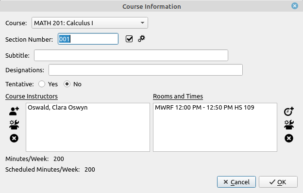
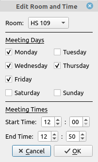

Course Information Dialog
The Course Information dialog lists all the properties for any course in the schedule. It also allows the editing of the class attributes of the course. Checks are made for conflicts then editing the attributes so that it will not accept any edits that would produce a conflict with the rest of the schedule.

- Course: The course being taught drop down selection. All courses in the course database are listed here, and it can be changed to any of them.
- Section Number: The section number of the class. This is free form text and does not need to be numeric, so 001H would be a legitimate section number. The two tools to the right are a check if the section number can be used and a section number generator respectively. If the course or section number is changed it is possible that the number conflicts with another section currently in the schedule, this option will check if that is the case. The section number check is also done when the user clicks the OK button. The auto-generator will generate a section number that is not being used for the currently selected class. These are of the form 001, 002, 003, ...
- Designations: This is anything you wish to note about the class, LLC, Honors, restricted to majors, ... It is free form text and can be anything you wish.
- Tentative: Tentative course designation selection buttons.
- Course Instructors: This is a list of the instructors for the course. It is also the only place where you can designate team-taught classes. You can change the professor teaching the class by double-clicking their name in the professor list. A dialog box will appear with a drop-down list of all the professors in the faculty database, simply select the new professor and click OK. You can also change an instructor by selecting the instructor and clicking the second tool in the vertical toolbar to the left (Edit Instructor), the same professor selection dialog box will open. The vertical toolbar to the left has three options, adding an instructor, editing an instructor, and deleting an instructor. The adding of an instructor will open the same dialog box as with editing but in this case the selected instructor will be added to the instructor list, i.e. a team-taught course. This will make a time conflict check with all the instructors so if you have a situation where the course is team taught but the instructors have another class on the days they are not teaching then you probably do not want to use this feature, and it might be better to place a note in the designations field. Also, the program assumes that team taught courses are equal in workload for all instructors, so if there are two professors for a class each is given half of the workload hours of the class. The third option simply removes a professor from the instructor list. Every course is required to have at least one professor instructing it, so the dialog will not allow you to leave this empty. So having a generic staff instructor in your faculty database may come in handy.
- Rooms and Times: This is a list of all the rooms and times the course is meeting. You an edit the room and time by double-clicking any entry in the list. When you do so the room and timeslot dialog will open allowing you to make any changes you would like.

The room is a drop-down selection at the top, the days of the week are simple check buttons, and the times are numeric inputs. The times are to be input using a 24-hour clock but will be displayed in reports and windows on a 12-hour clock. You can also change a time and room by selecting it from the list and clicking the second tool in the vertical toolbar to the left (Edit Room and Time), the same room and time selection dialog box will open.
The vertical toolbar to the left has three options, adding a timeslot, editing a timeslot, and deleting a timeslot. The adding of a timeslot will open the same dialog box as with editing but in this case the timeslot will be added to the rooms and times list. The third option simply removes a timeslot from the list.
- Minutes/Week: This is the number of minutes per week that the course is supposed to meet. This number is taken from the course information in the course database.
- Scheduled Minutes/Week: This is the number of minutes the course is currently scheduled for.